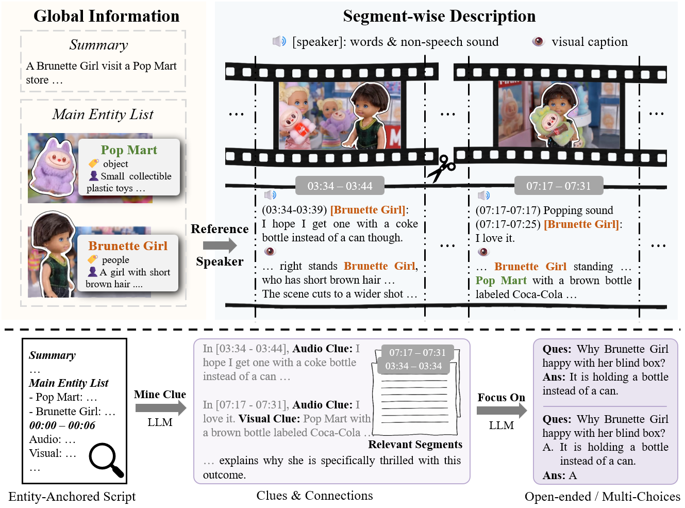
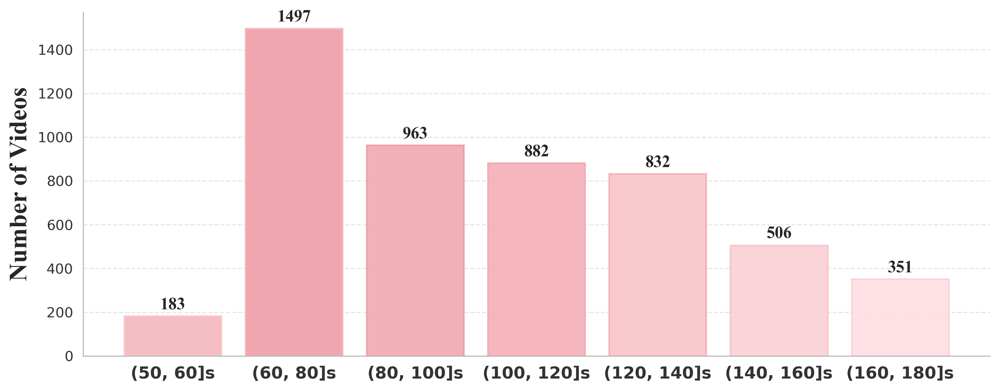
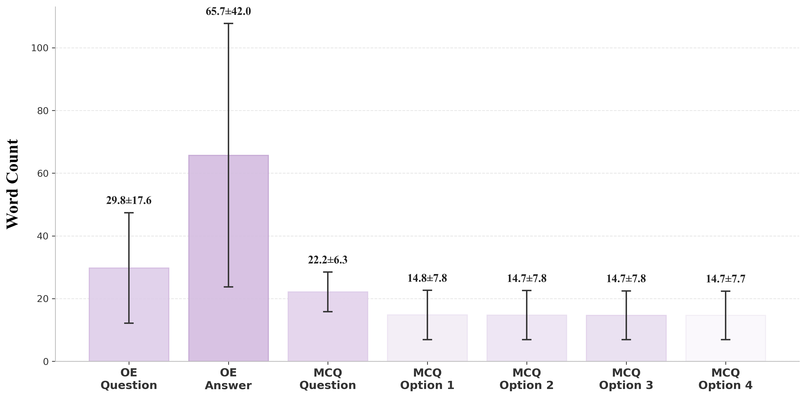
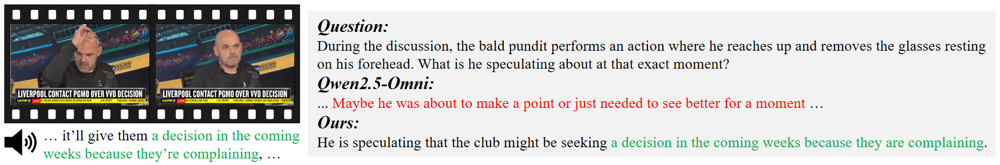
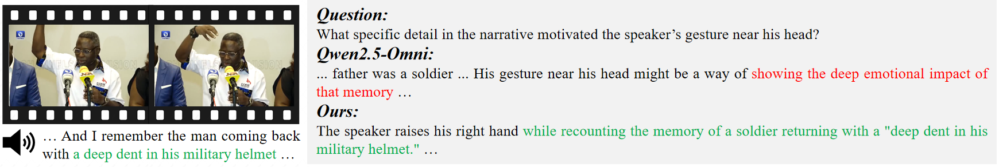
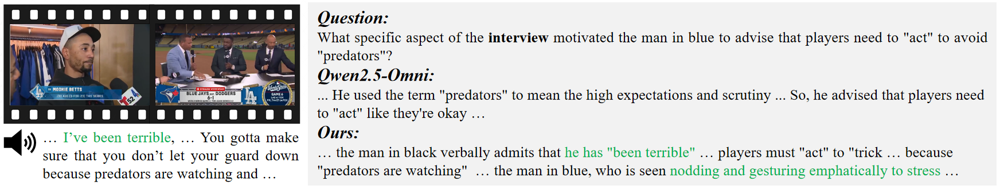

A Dataset for Audio-Visual Reasoning through
Structured Scripts and Evidence Chains
1Nanjing University 2CASIA
* Corresponding author
Motivation
Existing pipelines often split videos into short clips, caption audio and vision separately, and generate QA directly from long descriptions.
While highly scalable, this paradigm weakens the deep temporal connections and multimodal interactions that complex audio-visual comprehension demands, leading to three major problems:
Sound-source associations break.
Entity references drift across clips.
QA is often limited to local events.
Use the main entity list as a global prior to integrate fragmented audio-visual information into a coherent, structured script.
Instead of directly generating QA from the long description, the model is first asked to mine the audio-visual cues.
OmniVideo-100K
Method
The pipeline formalizes the raw video into a structured text representation, enabling LLMs to mine evidence chains before QA synthesis.

Script: a summary, a main entity list, and structured segment-wise descriptions that integrate speech, sounds, and visual information.
Use consistent identifiers (orange and green text) from the main entity list to ensure coherence across clips and associate speech with visual entities.
Mine cross-segment and cross-modal clues from the script.
Produce QA pairs based on the clues and relevant segments.
Why is Brunette Girl happy with her blind box?
Earlier [03:34 - 03:44], another person is shown holding a Pop Mart doll that carries a red soda can. Later [07:17 - 07:31], the scene shows the Brunette Girl holding her own newly unboxed doll, which carries a brown soda bottle labeled Coca-Cola.
At [03:34 - 03:39], upon seeing another doll being shown, Brunette Girl expresses her expectation: "I hope I get one with a coke bottle instead of a can though." Later, at [07:17 - 07:25], she opens her own blind box and happily exclaims: "I love it."
It is holding a bottle instead of a can.
Dataset
OmniVideo-100K provides automatically generated instruction-tuning samples; OmniVideo-Test features manually verified test samples.
Focuse on perceiving and synchronizing audio and vision along the timeline.
| Fine-Grained Perception | Perceive synchronized cross-modal details from given unimodal cues. |
| Scene Transformation Detection | Identify synchronized visual shifts using audio cues. |
Emphasize semantic analysis, linking cross-modal information to grasp narratives.
| Context Understanding | Identify semantic associations between audio and visual elements. |
| Comparison | Compare target states or attributes across different timestamps. |
| Sentiment Analysis | Analyze character inner states via audio-visual cues. |
| Event Sequence Ordering | Restore the correct temporal order of jumbled events. |
| Summarization | Generate an audio-visual summary for specific events. |
Advanced cognitive abilities requiring logical deduction and abstract thinking.
| Causal Reasoning | Infer underlying causes of specific events. |
| Future Prediction | Predict upcoming plot developments from current content. |
| Hypothetical Reasoning | Propose what-if scenarios to reinterpret video content. |
Video category distribution across diverse real-world domains.

Video length statistics, with the majority spanning 1-3 minutes.

Word count statistics (mean±std), highlighting detailed OE answers and balanced MCQ options.
| Datasets | # Samples | Domain | Avg. Length | Annotation | Complex Temporal | Evidence Chain | Structured Narratives |
|---|---|---|---|---|---|---|---|
| AVSD | 8K | Open | 30s | Manual | ✗ | ✗ | ✗ |
| Pano-AVQA | 42.8K | Panoramic | 5s | Manual | ✗ | ✗ | ✗ |
| Music-AVQA | 32K | Music | 60s | Manual | ✗ | ✗ | ✗ |
| AVQA | 40K | Open | 10s | Manual | ✗ | ✗ | ✗ |
| JavisInst-Und | 110K | Open | 10s | Automatic* | ✗ | ✗ | ✗ |
| EgoAVU-Instruct | 3M | Ego | 1-6min | Automatic | ✗ | ✗ | ✗ |
| OmniVideo-100K | 100K | Open | 103s | Automatic | ✔ | ✔ | ✔ |
* The automated pipeline leverages annotations from other datasets rather than starting from raw video.
Results
Fine-tuning on OmniVideo-100K improves audio-visual comprehension on OmniVideo-Test and transfers to established benchmarks.
On OmniVideo-Test, fine-tuning on OmniVideo-100K brings overall gains of 20.59%, 17.82%, and 13.86% for VITA-1.5, Qwen2.5-Omni-7B, and Qwen3-Omni-30B-A3B-Instruct respectively.
| Model | Size | Overall | Alignment | Understanding | Reasoning | (0, 2]min | (2, 5]min |
|---|---|---|---|---|---|---|---|
| Human | - | 100.00 | - | - | - | - | - |
| Gemini-3.1-Pro | - | 83.96 | 83.62 | 84.50 | 83.21 | 82.61 | 84.59 |
| VITA-1.5 | 8B | 40.99 | 28.45 | 43.02 | 48.09 | 44.72 | 39.24 |
| Qwen2.5-Omni | 7B | 42.77 | 39.66 | 46.51 | 38.17 | 38.51 | 44.77 |
| video-SALMONN 2+ | 7B | 45.15 | 37.93 | 49.22 | 43.51 | 46.58 | 44.48 |
| OmniVinci | 9B | 47.13 | 43.97 | 51.55 | 41.22 | 47.20 | 47.09 |
| MiniCPM-o 4.5 | 9B | 55.25 | 56.90 | 58.14 | 48.09 | 53.42 | 56.10 |
| Qwen3-Omni | 30B | 49.70 | 43.10 | 55.04 | 45.04 | 49.07 | 50.00 |
| Uni-MoE-2.0-Omni | 30B | 46.93 | 39.66 | 52.71 | 41.98 | 46.58 | 47.09 |
| Ours (VITA-1.5) | 8B | 61.58+20.59 | 59.48+31.03 | 63.18+20.16 | 60.31+12.22 | 59.01+14.29 | 62.79+23.55 |
| Ours (Qwen2.5-Omni) | 7B | 60.59+17.82 | 62.93+23.27 | 62.40+15.89 | 54.96+16.79 | 54.66+16.15 | 63.37+18.60 |
| Ours (Qwen3-Omni) | 30B | 63.56+13.86 | 60.34+17.24 | 67.05+12.01 | 59.54+14.50 | 62.11+13.04 | 64.24+14.24 |
Models fine-tuned on OmniVideo-100K exhibit strong generalization, achieving consistent improvements across audio-visual benchmarks (Daily-Omni, OmniVideoBench, JointAVBench, and FutureOmni) while maintaining comparable performance on general video benchmarks (Video-MME ans Video-MME-v2).
| Model | Size | Video-MMEshort | Video-MME-v2 | Daily-Omni | OmniVideoBench | JointAVBench | FutureOmni |
|---|---|---|---|---|---|---|---|
| # Samples | - | 900 | 328 | 1197 | 509 | 2153 | 960 |
| VITA-1.5 | 8B | 70.63 | 5.95 | 52.63 | 36.35 | 44.77 | 48.65 |
| Qwen2.5-Omni | 7B | 75.56 | 10.28 | 62.41 | 36.54 | 54.44 | 48.85 |
| video-SALMONN 2+ | 7B | 74.22 | 11.50 | 62.57 | 35.36 | 56.39 | 51.88 |
| OmniVinci | 9B | 77.56 | 11.59 | 61.32 | 36.74 | 57.55 | 52.81 |
| MiniCPM-o 4.5 | 9B | 83.22 | 14.48 | 80.20 | 41.06 | 55.18 | 52.29 |
| Qwen3-Omni | 30B | 82.00 | 14.31 | 74.27 | 43.84 | 63.17 | 53.44 |
| Uni-MoE-2.0-Omni | 30B | 78.89 | 8.82 | 64.33 | 38.55 | 57.55 | 52.81 |
| Ours (VITA-1.5) | 8B | 67.67-2.96 | 7.42+1.47 | 55.39+2.76 | 36.94+0.59 | 57.41+12.64 | 56.35+7.70 |
| Ours (Qwen2.5-Omni) | 7B | 76.33+0.77 | 8.50-1.78 | 69.84+7.43 | 39.88+3.34 | 60.75+6.31 | 55.00+6.15 |
| Ours (Qwen3-Omni) | 30B | 83.56+1.56 | 15.33+1.02 | 76.61+2.34 | 44.81+0.97 | 66.37+3.20 | 57.60+4.16 |
Single-modality ablations reduce performance, confirming that OmniVideo-Test requires audio-visual synergy rather than isolated audio or visual perception.
| Model | Size | Overall | Alignment | Understanding | Reasoning | (0, 2]min | (2, 5]min |
|---|---|---|---|---|---|---|---|
| Audio-Visual | |||||||
| MiniCPM-o 4.5 | 9B | 55.25 | 56.90 | 58.14 | 48.09 | 53.42 | 56.10 |
| Qwen3-Omni | 30B | 49.70 | 43.10 | 55.04 | 45.04 | 49.07 | 50.00 |
| Audio-Only | |||||||
| MiniCPM-o 4.5 | 9B | 45.74-9.51 | 36.21-20.69 | 51.94-6.20 | 41.98-6.11 | 45.34-8.08 | 45.93-10.17 |
| Qwen3-Omni | 30B | 46.14-3.56 | 37.07-6.03 | 52.71-2.33 | 41.22-3.82 | 48.45-0.62 | 45.06-4.94 |
| Visual-Only | |||||||
| MiniCPM-o 4.5 | 9B | 47.92-7.33 | 42.24-14.66 | 50.00-8.14 | 48.85+0.76 | 51.55-1.87 | 46.22-9.88 |
| Qwen3-Omni | 30B | 47.13-2.57 | 42.24-0.86 | 48.84-6.20 | 48.09+3.05 | 45.96-3.11 | 47.67-2.33 |
Under matched Qwen2.5-Omni fine-tuning settings, OmniVideo-100K improves most benchmarks while AVQA and JavisInst-Und often reduce performance.
| Data | Video-MMEshort | Video-MME-v2 | OmniVideo-Test | Daily-Omni | OmniVideoBench | JointAVBench | FutureOmni |
|---|---|---|---|---|---|---|---|
| Qwen2.5-Omni | 75.56 | 10.28 | 42.77 | 62.41 | 36.54 | 54.44 | 48.85 |
| w. AVQA | 68.11 | 9.69 | 6.28 | 55.14 | 34.38 | 50.16 | 43.65 |
| w. JavisInst-Und | 59.44 | 3.22 | 38.22 | 48.96 | 32.42 | 44.36 | 58.54 |
| w. OmniVideo-100K | 76.33 | 8.50 | 60.59 | 69.84 | 39.88 | 60.75 | 55.00 |
Performance improves sharply with only 10K samples and peaks in average score at 75K, suggesting useful scaling with mild saturation at the full 100K setting.
| Data | Avg. | Video-MMEshort | Video-MME-v2 | Daily-Omni | OmniVideoBench | JointAVBench | FutureOmni | OmniVideo-Test |
|---|---|---|---|---|---|---|---|---|
| w/o SFT | 47.26 | 75.56 | 10.28 | 62.41 | 36.54 | 54.44 | 48.85 | 42.77 |
| OmniVideo-10K | 52.64 | 77.22 | 13.84 | 69.92 | 39.10 | 60.57 | 52.60 | 55.25 |
| OmniVideo-25K | 53.98 | 76.56 | 13.74 | 70.68 | 42.63 | 60.15 | 54.27 | 59.80 |
| OmniVideo-50K | 54.14 | 76.33 | 11.38 | 69.84 | 42.83 | 59.45 | 57.60 | 61.58 |
| OmniVideo-75K | 54.32 | 76.89 | 10.47 | 72.26 | 41.26 | 61.03 | 55.73 | 62.57 |
| OmniVideo-100K | 52.98 | 76.33 | 8.50 | 69.84 | 39.88 | 60.75 | 55.00 | 60.59 |
Case studies
Cases demonstrating improvements in fine-grained temporal alignment and joint cross-modality understanding.

Visual evidence
The bald pundit performs a visual gesture, reaching up to remove the glasses resting on his forehead.
Audio evidence
Simultaneously, the speech mentions that the club may receive a decision in the coming weeks because they are complaining.
Baseline failure
Qwen2.5-Omni relies solely on the visual action described in the question, offering a speculative guess that he wanted to make a point or see better, without grounding the answer in the simultaneous audio.

Visual evidence
The speaker raises his right hand to gesture near his head, mimicking the location of a dent on a helmet.
Audio evidence
Simultaneously, the speech recounts the specific detail of a man returning with a deep dent in his military helmet.
Baseline failure
Qwen2.5-Omni fails in fine-grained temporal alignment, capturing only a nearby audio phrase ("father was a soldier") to offer a speculative emotional interpretation instead of linking the gesture to the exact concurrent words.

Visual evidence
The man in blue nods and gestures emphatically.
Audio evidence
The player in black admits that he was terrible and then the man in blue says players must not let their guard down because predators are watching.
Baseline failure
Qwen2.5-Omni fails to associate the preceding segment, missing the player's admission ("been terrible") and isolating the pundit's subsequent advice about predators.
Citation
Use the following BibTeX for the OmniVideo-100K project and dataset.
@article{omnivideo100k2026,
title={OmniVideo-100K: A Dataset for Audio-Visual Reasoning through Structured Scripts and Evidence Chains},
author={Cai, Xinyue and Fu, Chaoyou and Zhang, Yi-Fan and He, Ran and Shan, Caifeng},
journal={arXiv preprint arXiv:26xx.xxxxx}
year={2026},
}